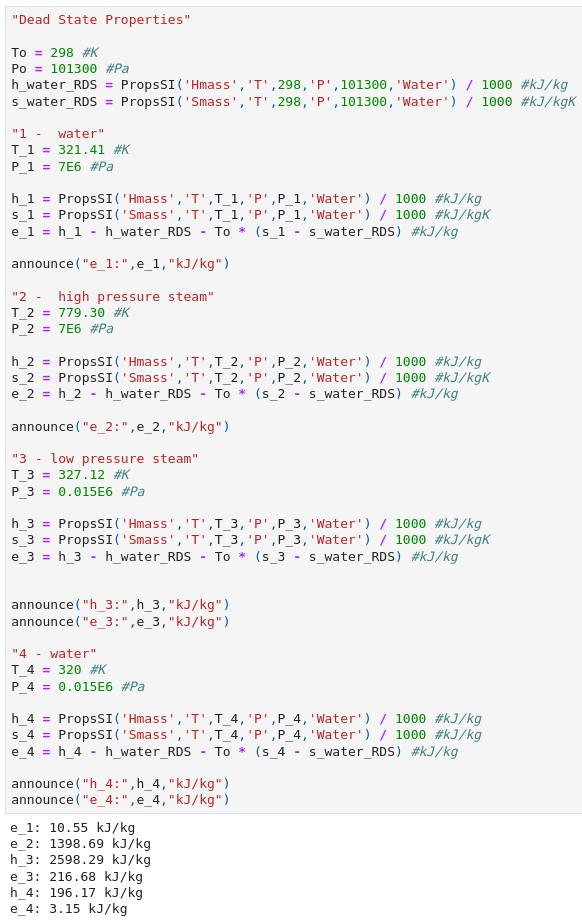

beccs exergy analysis
This project was presented as a requirement for the course MECH 450C: Energy Conversion and Storage, taught by Professor Andrew Rowe. This project was done by myself, Jersey Kertawidjaja, and my teamate Pouria Fyezi Oskouei.
Objective
The purpose of this project is to conduct an exergetic analysis of a Direct Air Capture (DAC) system coupled with a power cycle (that runs on natural gas) and see how DAC affects the efficiency of the system. This configuration of biogas power cycle and carbon capture is called Bioenergy with carbon capture and storage (BECCS) and is quite an alluring solution to the climate issue.
Exergetic Analysis
Exergetic calculations were required to be done on the power cycle system as well as the carbon capture
component. My part specifically, was on the power cycle exergy analysis.
Below are the expressions that will be used for defining the exergetic values:
Energy Balance
\[{dE \over dt}=Q-W+\sum{ \dot {m_i}} {h_i}^* - \sum{ \dot {m_e}} {h_e}^* \]
Exergetic Balance
\[{dE_x \over dt}=\sum{ {\dot E_{xQ}}} - \dot W + \sum{ {\dot m e_{xf}}} - \dot \Pi_D\]
Flow Exergy
\[e_{xf} \equiv (h-h_0) - T_0(s-s_0)+ {{V^2}\over2} + gz +e_{ch} \]
Chemical Exergy
\[\bar e_{ch} = \sum_{\alpha}^n(\bar e_{ch} + \bar R T_0 ln(x_\alpha))x_\alpha \]
System Efficiency
\[\eta_{system} = {E_P \over E_F} = 1 - {E_D \over E_F} \]
natural gas power cycle analysis
In order to compare the system effeciency of a typical natural gas (methane) power cycle, equipt with CCS, with a biogas (methane from biological sources) power cycle system absent CCS, the schematic of the process of power generation is needed. Below is an image of the cycle generated with AutoCAD:

Component Breakdowns
With the components broken down, a component exergy flux analysis can be conducted. I utilized JupyterLab and CoolProp to store and organize state properties of each components:
Fuel and exhaust properties

Dead State properties
-

Combustor and Boiler

Turbine
Condenser

Pump
Total Destruction and Efficiency

Ploting

Combination of powerplant and ccs
My teamate, Pouria, conducted the exergy analysis for the carbon capture system similarly. To summarize, the total efficiency of the system (Power plant + Carbon Capture) comes at 18.20%. Considering the 25.32% powerplant efficiency, the addition of the carbon capture system, did not greatly affect the system negatively.
Evaluation of sources for biogas
I was also responsible in reading about the environmental risks that is present when implement BECCS
 The argument for BECCS is made based on the idea of “net negative” carbon emissions that it can provide.
The idea of producing power while reducing carbon dioxide concentration in the atmosphere is very
alluring. Although I've found several arguments that have been made against BECCS due to the fact that in order for it to be net
negative, the source of heat for its power cycle must come from bioenergy. And as discussed in this
report, the amount of land that is required to generate energy and capture carbon is quite significant,
ranging between 100 million to 800 million hectares. Such an increase of cropland would cause a balance
in biodiversity.
The argument for BECCS is made based on the idea of “net negative” carbon emissions that it can provide.
The idea of producing power while reducing carbon dioxide concentration in the atmosphere is very
alluring. Although I've found several arguments that have been made against BECCS due to the fact that in order for it to be net
negative, the source of heat for its power cycle must come from bioenergy. And as discussed in this
report, the amount of land that is required to generate energy and capture carbon is quite significant,
ranging between 100 million to 800 million hectares. Such an increase of cropland would cause a balance
in biodiversity.